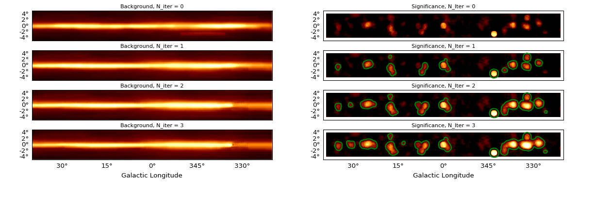

Background Estimation¶
Here we introduce a background estimation method based on significance clipping.
Significance Clipping¶
TODO: Add a link to the proceeding, and summarise here the method & intro from the proceeding.
The algorithm is demonstrated in the example below, where it is applied to 5 years of Fermi-LAT counts data in the Galactic Plane, in line with the proceeding study. 4 iterations are shown here with parameters selected so as to exaggerate the action of the algorithm.
"""Estimate a diffuse emission model from Fermi LAT data.
"""
import numpy as np
import matplotlib.pyplot as plt
from astropy import units as u
from astropy.coordinates import SkyCoord
from astropy.convolution import Tophat2DKernel
from gammapy.datasets import FermiGalacticCenter
from gammapy.image import SkyImageList, SkyImage
from gammapy.detect import KernelBackgroundEstimator
# Parameters
CORRELATION_RADIUS = 10 # Pixels
SIGNIFICANCE_THRESHOLD = 5 # Sigma
MASK_DILATION_RADIUS = 0.5 * u.deg
# Load example images.
filename = ('$GAMMAPY_EXTRA/datasets/source_diffuse_separation/'
'galactic_simulations/fermi_counts.fits')
counts = SkyImage.read(filename)
center = SkyCoord(0, 0, frame='galactic', unit='deg')
images = SkyImageList()
images['counts'] = counts.cutout(center, (10 * u.deg, 80 * u.deg))
kernel_src = Tophat2DKernel(CORRELATION_RADIUS).array
kernel_bkg = np.ones((10, 150))
kbe = KernelBackgroundEstimator(
kernel_src=kernel_src,
kernel_bkg=kernel_bkg,
significance_threshold=SIGNIFICANCE_THRESHOLD,
mask_dilation_radius=MASK_DILATION_RADIUS,
)
result = kbe.run(images)
kbe.images_stack_show()
plt.show()
(Source code, png, hires.png, pdf)
{kind=link}
{kind=link}

- The images on the left show the background estimation with each iteration.
- The images on the right show the residual significance image with each iteration.
- The contours show the exclusion mask applied at each iteration.
The source mask is shown by the contours. This includes the regions excluded above the 5 sigma significance threshold (determined by the Li & Ma method [LiMa1983]) in computing the background estimation images above.